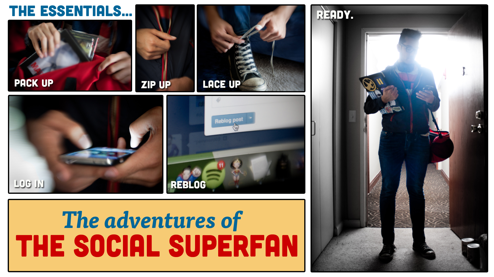
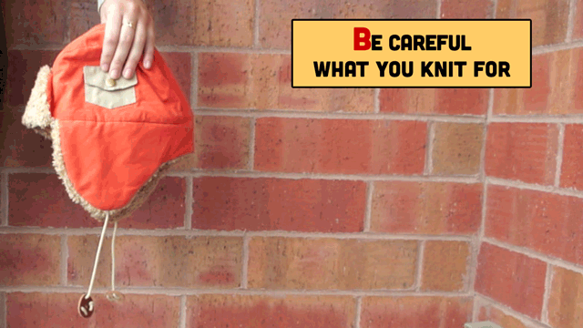
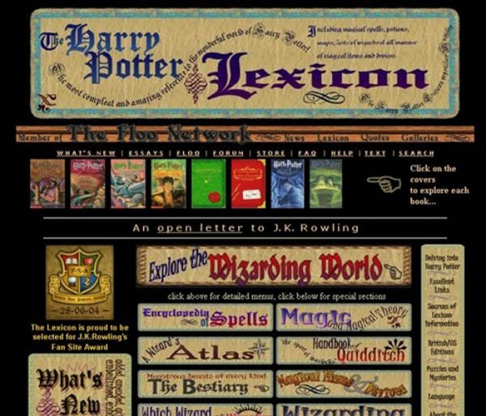
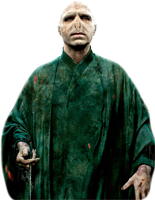
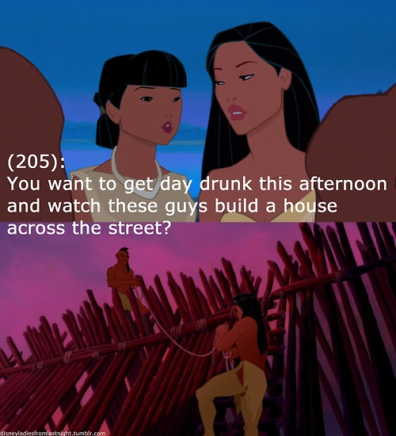
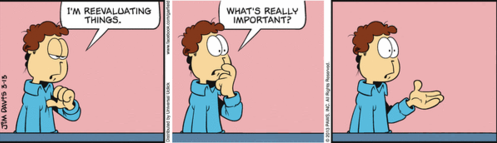

It's a particularly foreboding mid-April evening in Evanston, Ill. Bright blue flashes of lightning and rumbling thunder accompany the constant barrage of pouring rain. Never-ending streams of water block the usually clear windows of Peet's Coffee & Tea, turning the rush hour cars on Chicago Avenue into flying dots of light. Needless to say, it's a day no one would want to leave the confines of a cozy, dry home, let alone someone who doesn’t like to be away from the Internet for too long.
But avid social media user Joy Fernandez walks into Peet's right on time, with a big grin on her face, seemingly unfazed by the weather and with no smartphone or tablet in hand (although she does admit she was on Tumblr just before arriving for the interview). While it's not uncommon today for a 23-year-old like Fernandez to constantly be checking her various social media accounts, not every millennial uses social media in the way she does.
Fernandez is a self-proclaimed fangirl who actively participates in fandoms for Glee, the Harry Potter series and a few other TV shows. When the Northwestern University graduate student isn't studying Higher Education Administration and Policy, she's usually on Tumblr, catching up on the latest Glee news, reading fan fiction or reaching out to Glee actors.
"For as long as I can remember, I've been interested in interacting with media," Fernandez says. "I felt like it had to be more meaningful than just like, 'Oh, I watched this,' and 'I didn't like this.'"
Joy Fernandez is an active participant in fandoms such as Glee and the Harry Potter series.
Long before she spent her nights on Tumblr, Fernandez was an 8-year-old growing up in Libertyville, Ill. with little Internet supervision. She would scour the Internet for information on her first fandoms: The X-Files, Sailor Moon or anime. Stumbling upon archives, websites devoted to particular aspects of a fandom, Fernandez discovered information on shows and took part in quizzes. The fan fiction on the archives initially drew her in and motivated her to become more involved with fandom.
"It's an interesting transformation, because I was initially so hesitant to read or participate in that area of fan participation just because it was kind of weird," Fernandez says. "I was like 8, so I don't really know what I was thinking."
From there, Fernandez joined email chains where communities of people interested in these TV shows would talk, share quizzes and other information about the show. She even met a friend through the email chain with whom she is still pen pals.
At 12 years old, Fernandez began reading the Harry Potter book series, which would become her most significant fandom and one that she is still involved with today. Fernandez wrote more Harry Potter fan fiction than for any of her other fandoms, kept up with all of the scandals in the community and wrote letters to Daniel Radcliffe, the actor who played the title character in the series' film adaptations. Her involvement with the Harry Potter fan community also introduced Fernandez to LiveJournal, which at the time was the primary website for devotees to find information, read fan fiction and interact with other fans.
"I got more in-depth exposure and activity within fandom because of LiveJournal, just because it's so easy to be involved when you're actually engaging with people who are actual faces, not just looking at text," Fernandez says. "That helped really enrich and deepen my participation in fandom, for better or worse."
And then Fernandez found Tumblr. She first discovered the platform at age 19 while looking into creating a blog to document her study abroad experience in Amsterdam. At that point, she was more of a lurker on Tumblr and maintained her heavy use of LiveJournal. Fernandez gradually noticed that the Glee fandom really lived more on Tumblr with users constantly posting photos from the show and actors joining with their own accounts.
"I jumped in," Fernandez says. "Now that's where I am, looking at my Tumblr pretty much all times of the day."
"I jumped in. Now that's where I am, looking at my Tumblr pretty much all times of the day." - Joy Fernandez
Like many Tumblr users, Fernandez blogs about her personal life with short posts lamenting shoes she can't afford, the amount of homework she has to do or motion sickness on the subway. Scrolling through, it's clear that Fernandez heavily uses the platform to express her love of entertainment, share and obtain information and connect with other fans. In particular, Fernandez dedicates a good portion of her Tumblr to the Glee character Blaine Anderson and the actor who plays him, Darren Criss, with GIFs from the show and behind-the-scenes, as well as blogging about Criss' upcoming concert tour.
When asked how much time she spends on Tumblr a day, Fernandez whips out her iPad to check RescueTime, an app she downloaded to track her Internet usage. The app tells her she spends about 10 hours on Tumblr on her laptop every week. Factoring in her usage on her work computer, iPad and smartphone, she estimates she uses Tumblr for at least 20 hours per week, to which Fernandez immediately follows up with, "That's terrible!" But when asked if she’s embarrassed, Fernandez is quick to refute the impression she gives.
"I don't feel embarrassed, like I don't care about telling people," Fernandez says firmly. "I just feel so ashamed about the fact I can't do any work because I'm doing this."
Although, she does go to great lengths to keep her identity on social media covert. For instance, her "About Me" page on Tumblr doesn't list her name, location, age or describe her appearance.
"When I crafted this, I did it very, very carefully," Fernandez says. "I didn't want people to know about anything other than I watch this show, and I ship these characters, and I like that."
Still, in Fernandez's humorous, lighthearted and 35-word description on Tumblr, the least ambiguous identifier is that she loves "Jennarren," the duo of Jenna Ushkowitz, who plays Tina Cohen-Chang on Glee, and Criss. As much as she tries to separate her real-life identity from her online persona, Fernandez's passion for Glee and her other fandoms still shines through.
"I feel like if I didn't have involvement with fandom, I literally wouldn't know who I'd be as a person," Fernandez says. "It's like, wow, this has made a huge difference in my life."
Fandom is anything but new. From Trekkies to Deadheads to Twihards, passionate followers have always formed groups around what they love. But the Internet, especially social media, has brought fandoms once seen only as subcultures into the mainstream. Today, it's conventional to follow a musician on Twitter, read TV recaps or participate in a comedian's AMA on Reddit, even if social media users don't necessarily label themselves as fanboys or fangirls.
The ubiquity and power of fan participation through social media is undeniable. During the August 24, 2012 premiere of Cycle 19 of America's Next Top Model, show creator and judge Tyra Banks revealed that fans had the opportunity to vote on the contestants' photos, which would help determine who got eliminated each episode. The judges would also take fan comments on Facebook and Twitter into account when evaluating the models. In February, The Hollywood Reporter announced the Nielsen Co. will track Internet TV viewings in addition to its traditional TV ratings data beginning in September 2013. News of the success of the Veronica Mars Kickstarter campaign, which earned its goal of $2 million a mere 10 hours after its launch, swept the web, and many wondered if this provided a glimpse into the future of fan participation with entertainment.
Maria Mastronardi, an associate professor of Communication Studies at Northwestern University who taught a course on fandom and new media this winter, says in the early days of the Internet, fandom was much more localized into portals organized around each fandom where users would meet and interact with fellow community members. Due to digitization and social media, there is much more crossover and interaction between members of different fandoms and the platforms they use to communicate, due in part to the quick circulation of information that social media enables.
"Things are much faster moving, but they're also much more fragmented, so it's kind of old school to feel like you go to one portal, and you communicate on one portal," Mastronardi says. "What tends to happen is your Tumblr feed will pull in multiple types of tags and your activity will coalesce around tags or around bloggers whose work you enjoy."
This "cross-pollination" manifested itself a few months ago when fans of The CW series Supernatural criticized a fan of MTV's Teen Wolf for tagging a post they thought was a spoiler for their beloved show. It turned into an "internecine showdown," as Mastronardi describes, between the fans, with each of their respective communities getting involved and defending them.
"You didn't see so much of that kind of thing. Even though there were these fandom fights and stuff, they didn't sort of well up so quickly and then sort of die down," Mastronardi says. "I'll ask my students today, 'Oh remember that meltdown that occurred,' because I have it all documented. And they're like, 'No,' because they've moved on."

It may seem difficult to understand this kind of emotional attachment to a TV show, but Mastronardi says entertainment provides a sense of community for people with whom a particular character, TV show or movie may resonate. Even in the pre-digital era, it was not uncommon for people who loved the latest book they read, for instance, to want to share that experience with others. Social media has also provided an outlet for fans to receive recognition and validation for their creations and thoughts surrounding a particular fandom.
Even in the pre-digital era, it was not uncommon for people who loved the latest book they read, for instance, to want to share that experience with others.
"I think there's a lot of that kind of emotional reinforcement going on where people just get recognized and validated in ways that maybe they don't [otherwise]," Mastronardi says. "We have multiple poles available to us to get validation in our lives, and I think that this is one people can draw from in really meaningful ways."
All of this passion surrounding entertainment has not gone unnoticed by the movers and shakers of the entertainment industry. Teen Wolf posted a video of cast members Dylan O'Brien and Tyler Hoechlin embracing on a ship in order to acknowledge the intense support for the "Sterek" ship, a movement among fans hoping for a relationship to bloom between the characters Stiles and Derek. Ryan Murphy, the co-creator of Glee, has also been known to actively engage with fans and take their input into account through Twitter, according to Mastronardi. She has also heard of fan fiction authors becoming writers for TV shows after interacting with the creative team behind the show.
"I think the producers want the fans to think that that line between producers and consumers has been dissipated. I think producers draw a lot of insight from fans, like where fans are standing on an issue or what fans might like to see," Mastronardi says. "It's really definitely hugely influenced the operations of the production of new media texts and the production of texts in popular culture, this idea that fandom is important to that."
As for how this participation through social media will impact the entertainment industry in the long-run, that is still to be determined. While Facebook is almost 10 years old, social media is still in its infancy, and there's much more research to do on its impact, according to Mastronardi. However, she does acknowledge that fans seem to have more input in the production and consumption of entertainment.
"It's really impacted the way the industry markets its shows. I think that's a long-term thing," Mastronardi says. "The industry is kind of reformulating itself. Thinking about the way that fans will take every little thing, from a production perspective, becomes so meaningful."

The ship Serenity took its final voyage through space just a little more than 10 years ago. A product of Joss Whedon, Firefly lasted just one season on FOX. The show's fan base (also known as Browncoats) has continued to be one of the most dedicated groups of television lovers.
A sign of the Browncoats diehard love of the show was the production and selling of Jayne hats on websites such as Etsy. The hats come from the Firefly episode "The Message," where the character Jayne Cobb receives the orange knit cap with earflaps as a gift from his mother. Fans fell in love with the hat and began knitting their own versions of it.
This reappropriation of the iconic Jayne hat didn’t come without consequences. Although social media has made reappropriation of entertainment easier, there are still certain boundaries fans are expected to stay within.
Stacy Tabb, 43, is a fan that went outside of those expectations. The web hosting company employee started making Jayne hats for her children for fun out of her Lakeland, Fla. home. Soon, friends and family members began asking for the hats, and then Tabb decided to list the hat on Etsy last year.
"It just kind of sat there," Tabb says. "Not a whole lot of activity on it because Etsy really requires traffic from outside in order for you to be found among the millions of listings that are there."
However, Tabb, along with the many other Jayne hat purveyors on Esty, recently received a cease-and-desist letter from Etsy's legal department saying that her listing had been deactivated. This came just a few months after, ThinkGeek, an online retailer that sells nerd and pop culture-related items, began selling a licensed version of the Jayne hat.
"It was like FOX cancelled Firefly again," Tabb says. "They were sending notices to absolutely everybody. I would look periodically through the day and would just see listing numbers decrease, decrease and decrease as they sent notices to people."
“It was like FOX cancelled Firefly again,” Tabb says. “They were sending notices to absolutely everybody.”
Vendors and fans alike took to social media to voice their frustration with FOX. All of this buzz quickly caught the media's attention, and news of the controversy spread. ThinkGeek responded by dissociating the site from the process and announcing it would donate 100 percent of the proceeds from the sale of the Jayne hat to Can't Stop the Serenity, a Browncoat charity that supports Equality Now. FOX has yet to comment on the situation.
This controversy is emblematic of how fans are already comfortable making social media a part of their entertainment experience, but networks are still trying to understand how to best take advantage of social media.
"Social media is important, and it's slowly becoming used as a tool to promote our shows," says Stephanie Bernard, Assistant Marketing Manager for CBS Marketing Group who handles social strategy for all of CBS’ primetime shows. "We're still trying to figure out what's the best method, how do we engage with our fans where it feels authentic and not like a network or corporation where we're forcing a message to you."
Fan Appreciation? When Creators Fight Back
Fans can find themselves in tough situations as they try to navigate the line between reapproriation and copyright infringement.

{kind=link}
Though TV networks may still be in the trial-and-error phase of social media, having a successful social media strategy can mean a big boost in ratings. The Nielsen Co. found that in 2012, 32 million unique people in the U.S. tweeted about TV. For premiere episodes, Nielsen found that an 8.5 percent increase in Twitter volume among 18 to 34-year-olds can yield a 1 percent increase in TV ratings, and a 14 percent increase in Twitter volume among 35 to 49-year-olds can also yield a 1 percent increase in TV ratings.
According to Bernard, it’s exciting to see fan-created profiles because it shows that people are passionate about what creators produce. Carlo Moss, co-creator of the web series The Most Popular Girls in School, feels the same way.
"When somebody likes your show so much that they took all this time to make their own usernames, sit down and type out tweets in these characters, that’s the most flattering thing I can think of," Moss says.
The Most Popular Girls in School, which follows the trials and tribulations of students at Overland Park High School, acted out with Barbie dolls, has four social media accounts actually run by the creators: Brittnay Matthews’ Facebook page, Rachel Tice’s Google+ account and Saison Marguerite’s and Mackenzie Zales’ Twitter accounts. However, fans have created various other accounts, such as a Facebook page for Cameron Van Buren. Moss says he has no problems with the fan-run accounts, but he says there are certain lines that fans shouldn't cross when reappropriating other people’s work.
"There’s a big difference from joining in on the fun and being a person who is making a profit or misconstruing an image," Moss says.
As for Tabb, the cease-and-desist letter hasn’t stopped her knitting. She continues to produce Jayne hats, like many other vendors on Etsy, and she even has more requests for them due to the controversy.
"It was absolutely hilarious how it had the opposite effect of what [FOX] intended to do," Tabb says. "They called attention to themselves in just the worst way possible, and it just makes me laugh."
Tyra Banks’ Vine account is nothing short of outrageous. Followers can watch her sing Rihanna’s "Diamonds," imitate Jennifer Lawrence using an issue of Vanity Fair and even reenact Mommie Dearest with a Styrofoam mannequin head.
Albeit a little over-the-top, the new social media network allows celebrities such as Banks to share their worlds in up to six seconds, along with any other ordinary iPhone owner. Vine is just one of the ways social media could affect entertainment in the future.
"It's for people who are interested in your perspective," Mastronardi says. "Like who cares what six seconds of my life looks like to someone else? If you're famous, it's like the Being John Malkovich thing. Getting into the head of someone and seeing what they're looking at for six seconds is sort of meaningful."
Entertainment creators understand the power that social media has in terms of connecting them with their audiences. Countless celebrities followed the Twitter bandwagon, joining the network and easily racking up followers among their masses of fans.
Like Banks, Moss also paid attention to what was happening on social media and new technology trends so he could help grow The Most Popular Girls in Schools' popularity online.
"We got some advice from our friends who do social media," Moss says. "They said since Google+ works really well with YouTube, it helps to have a Google+. So now we have Rachel Tice and what she would be into."
The popular web series is familiar with the kind of power social media has. According to Moss, with one reblog by a Tumblr famous user, one of the show's GIFs garnered almost 35,000 more reblogs in the same day.
Mastronardi adds that many fans are investing time and resources into learning how to use software, such as Photoshop, to create these movable pictures and post them on social media networks. While the entertainment industry is in a sort of state of flux, Mastronardi says content producers are savvy to how fans will interpret their creations.
"I think the people in production are thinking of those things for sure," Mastronardi says. "They think, 'We have to focus on these little details that give fans these opportunities to create these GIFs,' and the GIFs become very popular."
Ultimately, social media enhances most fans’ experience with entertainment, which is why they are increasingly turning to the second screen. According to a study by BlueFin Labs, a social TV analytics company, social media comments about TV telecasts grew by 363 percent in 2012. One way Fernandez enriches her viewing experience is through meta analysis on social media, a way many in fandom study and look more deeply into their chosen text, in a similar way to studying literature or film in an academic setting. Tumblr was founded in 2007, the same year Gossip Girl premiered, but Fernandez says the social blogging platform wasn’t heavily used by the fandom community. Fernandez says she lost interest in Gossip Girl by not having many opportunities to interact with others on social media about The CW drama. While she also loses interest in her current main fandom Glee from time to time, Fernandez is able to keep up with the show’s developments because of all of the content shared on Tumblr.
Social media comments about TV telecasts grew by 363 percent in 2012.
"Having the ability to talk to other people who are also looking at the greater story line is helpful for me in making me feel like the show has some purpose," Fernandez says. "I appreciate the show more because of social media and just having that community of people who are also interested in the show."
As for what other forms of reappropriation and connectivity with entertainment canons there will be in the future, it’s unclear.
"Part of it depends on what new technologies are going to be available," Mastronardi says.
One thing is for sure: Fans will continue to enjoy the countless six-second bites from Banks to come. But in terms of fans actually reapproprating and creating their own products from other canons, it’ll take more than six seconds to see what happens.

When Characters Come to Life
Click on the characters above to find out more about how fans have brought them to life on the Internet.
Disney Ladies from Last Night
Social Media Platform: Tumblr
Inspiration: Female Disney characters and the Texts From Last Night blog
Followers: 20,000+
Overview: This Tumblr blog combines wholesome scenes starring Disney Princesses and other beloved female characters with outrageous posts from the popular blog “Texts From Last Night.”
Sample Post:

Sue Sylvester
Social Media Platform: Facebook
Inspiration: Sue Sylvester from Glee
Likes: 1.4 million
Overview: This fan-run Facebook page posts a mix of Sue's quotes from Glee as well as some created by the moderators of the page. The posts mainly insult Sue's nemesis Will Schuester, put down the New Directions and assert dominance as McKinley High's fiercest cheer coach.
Sample Post: “Schuester said he had the flu but I bet he just had a severe case of pomade poisoning.”
Lord Voldemort
Social Media Platform: Twitter
Inspiration: Lord Voldemort from the Harry Potter series
Followers: 2.3 million
Overview: The user behind this Twitter account posts smart, sassy and usually offensive tweets as the snake-like villain from the Harry Potter series.
Sample Tweet: "Why were the Weasleys even afraid of dementors? Gingers don't have souls."
Regina George
Social Media Platform: Twitter
Inspiration: Regina George from Mean Girls
Followers: 487,905
Overview: Follow this fan-run Twitter account to get your daily dose of high maintenance teen angst from North Shore High School's Queen B.
Sample Tweet: "Let's play 'how rude can I be until you realize I don't like you.'"
"Buffy vs. Edward: Twilight Remixed"
Social Media Platform: YouTube
Inspiration: Buffy the Vampire Slayer and The Twilight Saga
Views: 3.4 million
Overview: Jonathan McIntosh mixed footage from the TV show Buffy the Vampire Slayer with scenes from The Twilight Saga, to create a video in which Edward stalks Buffy, who then slays him. McIntosh went through an extensive appeals process with YouTube after Lionsgate asserted a copyright claim and tried to monetize on the video. The video was removed, but three weeks later reinstated.
Garfield Minus Garfield
Social Media Platform: Tumblr
Inspiration: Jim Davis’ “Garfield” comic strip
Overview: Creator Dan Walsh removes the titular character from “Garfield” comic strips, revealing owner Jon Arbuckle’s deep, inner thoughts and existential crises.
Sample Post:

BAMF Girls Club
Social Media Platform: YouTube
Inspiration: The Harry Potter series, The Twilight Saga, The Hunger Games, Buffy the Vampire Slayer, The Girl with the Dragon Tattoo, The Walking Dead
Subscribers: 29,108
Overview: The BAMF Girls Club, created by YouTube user Comediva, uses the format of the Oxygen reality tv show Bad Girls Club to parody popular fictional characters Hermione Granger of the Harry Potter series, Bella Swan of The Twilight Saga, Katniss Everdeen of The Hunger Games, Buffy Summers of Buffy the Vampire Slayer, Lisbeth Salander of The Girl with the Dragon Tattoo, and Michonne from The Walking Dead.
Sheldon Cooper
Social Media Platform: Facebook
Inspiration: Sheldon Cooper from the CBS sitcom The Big Bang Theory
Likes: 11 million
Overview: The unofficial Facebook page includes GIFs, quizzes and quotes featuring the persnickety braniac and the rest of the Big Bang Theory gang.
Sample Post: "Mommy, I love you, don't let spock take me to the future!"